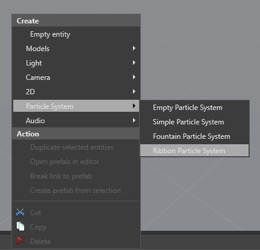
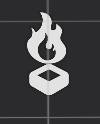
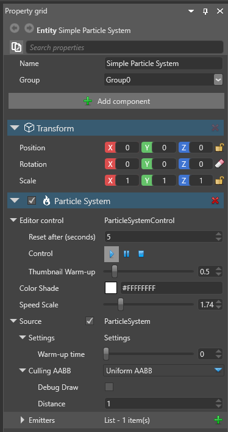

パーティクルの作成
初級 アーティスト プログラマー
パーティクルシステムを作成するには、シーンまたはエンティティツリーを右クリックして、[Particle system] の配下の希望のプリセット（Empty, Simple, Fountain, Ribbon のいずれか）を選択します。

Game Studio は、選択されたプリセットから、Transform コンポーネントと Particle System コンポーネントを持つエンティティを作成します。

あるいは、既存のエンティティに Particle system コンポーネントを追加することもできます。エンティティを選択した状態で、プロパティグリッドで [Add component] をクリックし、[Particles] > [Particle system] を選択します。

Game Studio は、エンティティに空のパーティクルシステムを追加します。
Transform コンポーネント
すべてのエンティティは、Transform コンポーネントを持っています。パーティクル要素の中には、回転やスケーリングなど、Transform コンポーネントの一部を無視するものもあります。例えば、重力はパーティクルシステムの回転に依存すべきものではないため、常に回転は無視されます。しかし、噴水パーティクルシステムでは、パーティクルの初期速度を計算するために、パーティクルシステムの位置を継承します。
均等なスケーリングのみがサポートされています。Transform コンポーネントに不均等な（同一でない）スケール値を設定した場合は、X 軸のスケール値だけが使用されます。
2 つのパーティクルシステムで Transform コンポーネントを共有したい場合は、2 つのパーティクルシステムエンティティを作成し、一方をもう一方の子とします。
Particle system コンポーネントのプロパティ
他のエンティティと同様に、パーティクルシステムエンティティを選択した状態で、プロパティグリッドでプロパティを編集することができます。

| プロパティ | 説明 |
|---|---|
| Editor control | シーンでの作業中に、Game Studio がエディタ上でパーティクルをどのように表示するかを設定します。Control で、パーティクルシステムを再生、一時停止、停止することができます。また、パーティクルエフェクトを一定の間隔でリセットすることもできるので、ワンショットのエフェクトをプレビューするのに便利です。Editor control プロパティは、実行時のパーティクルの表示には影響を与えません。 |
| Thembnail Warm-up | ウォームアップタイムを 0 より大きい値に設定すると、パーティクルが表示されたときに、すでにアクティブであるかのように表示されます。秒単位で指定します。例えば、ウォームアップタイムを 1 に設定すると、パーティクルエフェクトは、表示されるときにすでに 1 秒間アクティブであるかのように表示されます。これは便利な機能で、例えば火のエフェクトのウォームアップタイムを 0 に設定すると、火はレンダリングの開始と同時にすぐ発火するように見えます。レンダリングの開始時にすでに着火しているように見せたい場合は、ウォームアップタイムを増やします。 |
| Speed scale | パーティクルエフェクトのスピードをコントロールします。 |
| Culling AABB | パーティクルエフェクトの周囲に、軸並行境界ボックス（axis-aligned bounding box; AABB）が作成されます。ボックスがカメラビューに入っていない場合、Stride はパーティクルエフェクトのレンダリングを行いません。これは、カリングや最適化に役立ちます。Rotated AABB は、ボックスの形状を XYZ 座標で指定します。Uniform AABB は、指定したスケール（ワールド単位）の立方体を指定します。シーンエディターで AABB を表示するには、Debug Draw をオンにします。 |
| Emitters | パーティクルシステムに含まれるエミッター（emitter; 放出器）です。エミッターはリストに表示された順に更新されて描画されますが、その順番を変えることもできます。詳細についてはエミッターを参照してください。 |